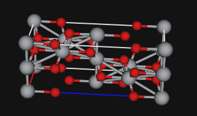

Miscellaneous information
Macintosh notes:
GSAS-II can be run on Windows, Linux and Macintosh/OS X computers, but the GUI follows the native style of Mac OS X. On Windows and some versions of Linux, the menu bars appears on top of the main window. On the Mac, the menu appears at the location that has been configured for menus (usually at the top of the screen). At present, two versions of GSAS-II are provided. One is for older, Intel CPUs and the other for "Apple Silicon" (ARM or M1, M2,...) CPUs. Eventually only ye ARM CPUs will be supported. At present, the Intel version will run on ARM machines under Rosetta, but eventually that too will go away.
GSAS-II defines actions for both the left and right and middle buttons assuming that a three-button mouse is available. If a two or three-button mouse is used with a Mac, the "extra" mouse buttons will work as intended. If using a Mac touchpad or single-button mouse, clicking the touchpad or mouse button will generate a "left button" click. Hold down the control-key to generate a "right button" click or for a right-button drag, hold down control while pressing on the mouse button or touchpad. I do not know how to generate a middle-button click or drag with a single-button mouse, but with a MacBook touchpad, pressing with two fingers generates the equivalent of a right-mouse drag and moving two fingers without pressure is the equivalent of a middle-button drag action.
Configuration Variables:
GSAS-II provides a number of configuration settings that can be changed via variables that can be set and saved. These are controlled in the File/Preferences menu item (on Mac the Preferences menu is found in the usual place on Macs, in the main application menu as well as in the File menu). These settings are saved for subsequent runs in a file named config.ini in the user's .GSASII directory. More information, including a list of the available configuration variables and their use can be found in the config_example.py file or the Configuration variables section of the Programmer's documentation.
Programmers' documentation
The routines and classes used within GSAS-II are documented in a set of web pages and in a PDF document. This documentation is created from the Python source code files using Sphinx.
Origin 1 -> Origin 2 Transformations
An important transformation may be needed in certain cases for space groups that have two alternate origin settings listed here. These are centrosymmetric space groups where the highest symmetry point in the structure does not contain a center of symmetry. Origin 1 places the origin at the highest symmetry setting while Origin 2 places the origin at a center of symmetry (creating a -x,-y,-z symmetry operator, which means that reflection phases can only be 0 or π.) GSAS-II requires use of the Origin 2 settings because computations are much faster and simpler without complex structure factors. Alas, the literature contains a number of structures reported in Origin 1, where the origin choice may not be clearly communicated. (The CIF standard does not require that origin choice be indicated.) When a structure is imported that uses any of the space groups where an origin choice is possible, a message is shown in GSAS-II notifying the user that they must confirm that the origin choice is correct and then provides the opportunity to change origins.
Example: An example of what can go wrong is illustrated with the structure of anatase. The space group is \(I\ {\rm 4_1}/a\ m\ d\). The coordinates for the two origin choices are:
Origin 1
| Atom | X | Y | Z |
|---|---|---|---|
| Ti | 0 | 0 | 0 |
| O | 0 | 0 | 0.208 |
Origin 2
| Atom | X | Y | Z |
|---|---|---|---|
| Ti | 0 | 1/4 | -1/8 |
| O | 0 | 1/4 | 0.083 |
Note that the Origin 2 coordinates are shifted by by addition of (0,1/4,-1/8) relative to those in Origin 1 (the values in the GSASIIspc.spg2origins array).
GSAS-II always uses the symmetry operators for Origin 2; if the structure is input incorrectly with the coordinates set for Origin 1, there are several obvious signs of problems:
- the site symmetries and multiplicities are wrong, often giving an incorrect chemical formula,
- the interatomic distances are incorrect
- a plot of the structure is improbable, as below:

In this case incorrect multiplicities gives rise to a density of 7.9 g/cc, double the correct value. Impossible interatomic distances of 1.88Å for Ti-Ti, and 1.39Å for Ti-O are seen. The unit cell contents with the wrong space group operators is shown above.
With coordinates that match the space group operations, the correct Ti-O distances are 1.92Å and 1.97Å and the shortest Ti-Ti distance is 3.0Å. (Note that interatomic distances can be computed in GSAS-II using the Phase's Atoms tab and the Compute/"Show Distances & Angles" menu item.)
Transform Origin: To transform a space group setting from Origin setting 1 to 2, use the Transform option in the Compute menu of a Phase's General tab and then select the last option in the "Common transformations" pulldown menu, which will be setting 1->2 for space groups where both origins are available, as shown to the right. The transformation matrix will be set to the identity and the "V" vector will have the required origin shift loaded. Press OK. The changes can be seen by selecting the Atoms tab.

Fundamental Parameters as used to derive instrumental parameters
This describes the FPA terms used to determine instrumental parameters in the "Fit Instr. profile from fundamental parms...". These follow the general usage in the Topas program. They are converted to the values needed by the NIST code. Parameters names are listed in bold, followed by units in parentheses and are then described.
Basic Bragg-Brentano parameters
- divergence (degrees) - Angle in equatorial plane describing the sample illumination for a Bragg-Brentano instrument
- soller_angle (degrees) - Angular limit for divergence in equatorial plane as limited by Soller collimator(s)
- Rs (mm) - Diffractometer radius: source to sample and sample to detector distance
- filament_length (mm) - Length of x-ray filament when used in “line-focus” (filament oriented along the axial direction)
- sample_length (mm) - Illuminated sample length in axial direction. Typically the same as filament_length.
- receiving_slit_length (mm) - Length of the receiving slit in axial direction. Typically the same as filament_length.
- LAC_cm (cm-1) - : The linear absorption coefficient adjusted for the sample packing density.
- sample_thickness (mm) - Thickness of sample measured along the radial direction in the equatorial plane
- convolution_steps (none) - The number of steps used for convolution for each step in the diffraction pattern. This results in more smooth convolutions.
- source_width (mm) - Width of x-ray filament in projection in the equatorial plane.
- tube-tails_L-tail (mm) - Width for x-ray intensity occurring beyond the Wehnelt shadow as a projection in the axial direction and measured in the positive two-theta direction.
- tube-tails_R-tail (mm) - Width for x-ray intensity occurring beyond the Wehnelt shadow as a projection in the axial direction and measured in the negative two-theta direction.
- tube-tails_rel-I (none) - Fractional of x-ray intensity found in the tube tails vs. the main peak. Note that tube tails are modeled as a step function.
Point detector parameter
- receiving_slit_width (mm) - Width of receiving slit placed in front of detector or possibly the diffracted beam monochromator (analyzer) measured in the equatorial plane
Linear position-sensitive detector parameter
- SiPSD_th2_angular_range (degrees) - Angular (two-theta) range in equatorial plane that the entire Si PSD subtends (not implemented in Topas)
Incident-beam monochromator (IBM) parameters
- src_mono_mm (mm) - Distance between the x-ray source (filament) and the monochromator, measured in the equatorial plane
- focus_mono_mm (mm) - Distance from monochromator crystal to focus slit, measured in the equatorial plane
- passband_mistune (none) - Offset for the tuning of the IBM to the center of the reference line of the spectrum, as a fraction of the IBM bandwidth
- mono_src_proj_mn (micron) - Bandwidth setting for the monochromator as set by the projection width of the xray source on the monochromator along beam direction and in the equatorial plane
- passband_shoulder (none) - Width of transition region from high-intensity, roughly flat region of the x-ray tube output to the to the tube tails region as a fraction of the IBM bandwidth
- two_theta_mono (degrees) - The full diffraction angle of the IBM crystal. This will be double the Bragg two-theta angle for the monochromator
- mono_slit_attenuation (none) - The attenuation of the Cu K alpha 2 source lines relative to the K alpha 1 lines as determined by the focal slit
If you use this, please cite M.H. Mendenhall, K. Mullen & J.P. Cline (2015), J. Res. of NIST, 120, p223. DOI: 10.6028/jres.120.014. If the incident beam monochromator model is used, please also cite: M.H. Mendenhall, D. Black & J.P. Cline (2019), J. Appl. Cryst., 52, p1087. DOI: 10.1107/S1600576719010951.
Applying corrections when reading powder data:
A special parameter can be added manually to a .instparm instrument parameter that will apply systematic changes to the position (usually 2\(\theta\)), intensity or weight values. An example showing how this is done follows:
#GSAS-II instrument parameter file; manually edited by B.H.Toby to show how to use CorrectionCode
Lam:0.72768
SH/L:0.002
...
Polariz.:0.99
Type:PXC
Bank:1
CorrectionCode:'''# Example 2theta correction (applied via numpy array correction; fast!)
print('2theta before', rd.powderdata[0][:3],'...',rd.powderdata[0][-2:])
TT = rd.powderdata[0]
rd.powderdata[0] += 0.06038972 - 0.001500277 * TT + 7.389e-06 * TT**2
print('2theta after', rd.powderdata[0][:3],'...',rd.powderdata[0][-2:])
'''
#
# alternate example. This applies a correction point-by-point in a loop
#
#CorrectionCode:'''#apply 2theta correction in a loop
#print '2T before', rd.powderdata[0][:3],'...',rd.powderdata[0][-3:]
#for i,TT in enumerate(rd.powderdata[0]):
# rd.powderdata[0][i] += 0.06038972 - 0.001500277 * TT + 7.389e-06 * TT**2
#print('2T after', rd.powderdata[0][:3],'...',rd.powderdata[0][-3:])
#'''